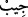

İçinde cevher varsa başını sedef gibi kendine çekersin
Mesnevî’de de şöyle der:
Ayırt eder de celâl sâhibi Allah’ın emriyle gizler
Çünkü Hak sırrını açık etmek helâl değildir
Gayb sırrını öğrenmeye
Ancak ağzını kapalı tutabilen lâyıktır
“Başörtülerini, yakalarının üzerine (kadar) örtsünler.”
“
” kelimesi atma, bırakma mânâsını da içerir. “
” kadının başına örtüp
kapattığı şey (başörtüsü) anlamına gelen “
” kelimesinin çoğuludur. Başı örtmek için
kullanılmayana şeye “
” denmez. el-Müfredât’ta der ki: “
”, aslında bir şeyi
örtmek demektir. Kendisiyle örtülünen şeye “
” denir. Fakat bu kelime örfte kadının
başını örttüğü şeye ad olmuştur. “
” ise gömlekte başı sokmak için kesilen yer, yaka
anlamındaki “
” kelimesinin çoğuludur. Buna göre âyetin mânâsı: “Kadınlar saçlarını,
küpelerini ve boyunlarını yabancı erkeklerden saklamak için baş örtülerini yakalarının
üzerine kadar bıraksınlar/indirsinler.” demek olur. Örtülerini yakalarının da üzerine
bırakmaları gerekir; yâni boyunlarını örtü ile örtsünler ki kulakları, boyunları ve
göğüsleri örtünmüş olsun. Bu âyet, kadının boğazının ve göğsünün avret olup erkeklerin
buralara bakmasının câiz olmadığına delildir.
“Kocaları, babaları, kocalarının babaları, kendi oğulları, kocalarının oğulları,
erkek kardeşleri, erkek kardeşlerinin oğulları, kız kardeşlerinin oğulları, kendi
kadınları (mü’min kadınlar), ellerinin altında bulunanlar (câriyeleri), erkeklerden,
âilenin kadınına şehvet duymayan hizmetçi vb. tâbi kimseler, yahut henüz kadınların
gizli kadınlık husûsiyetlerinin farkında olmayan çocuklardan başkasına ziynetlerini”
bilezik, pazıbent, gerdanlık, küpe gibi gizli tutmaları gereken süs eşyâlarını ve onlar bir
tarafa bu süs eşyâlarının takıldığı yerleri “göstermesinler.” Ziynetlerini göstermemeleri
ifâdesinin tekrarlanması kime göstermenin helâl olduğunu, kime göstermenin helâl
olmadığını açıklamak içindir.
Ebu’l-Leys der ki: “Kadınlar ziynetlerini taktıkları yerleri göstermesinler. Bu yerler
göğüs, baldır, topuk, kol ve baştır. Çünkü göğüs gerdanlığın, baldır halhalın, kol
bileziklerin, baş da küpelerin takıldığı yerdir. Âyette ziynet zikredilmiş fakat ziynetin
takıldığı yer kasdedilmiştir.”
Kadınlar gizli süs eşyâların ve bunları taktıkları yerleri şu kimselere gösterebilirler:
1- Kocalarına. el-Müfredât’ta der ki: “
” eşlerden erkek olandır. Çoğulu “
”dir.” Yâni kadınlar kocalarına gizli ziynetlerini gösterebilirler. Zâten ziynet ve
süslenme ile onlar kasdedilir. Kocaların hanımlarının bütün bedenine, özellikle şehveti
takviye için olduğu zaman bilinen özel yerlerine bile bakma hakları vardır. Fakat
ittifakla ferce, hatta kendi fercine bile bakma mekruh görülür. Çünkü ferce bakmanın